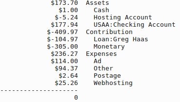

Source: https://www.wycampaignfinance.gov
| Contributor Name | Recipient Name | Recipient Type | Contribution Type | Date | Filing Status | Amount | City State Zip |
|---|---|---|---|---|---|---|---|
| RAY, JIM I (BUFFALO) | GREGORY P HAAS | CANDIDATE | MONETARY | 10/27/2016 | FILED | 10 | BUFFALO, WY 82834 |
| NARAL PRO-CHOICE WYOMING PAC (LARAMIE) | GREGORY P HAAS | CANDIDATE | MONETARY | 10/10/2016 | FILED | 50 | LARAMIE, WY 82073 |
| SEARS, MEREDITH (MIDWEST) | GREGORY P HAAS | CANDIDATE | MONETARY | 9/28/2016 | FILED | 20 | MIDWEST, WY 82643 |
| DAVIS, DONNA (BUFFALO) | GREGORY P HAAS | CANDIDATE | MONETARY | 9/27/2016 | FILED | 15 | BUFFALO, WY 82834 |
| BLACK, SUZI (BUFFALO) | GREGORY P HAAS | CANDIDATE | MONETARY | 9/20/2016 | FILED | 100 | BUFFALO, WY 82834 |
| CHENNETTE, VIKKI (BUFFALO) | GREGORY P HAAS | CANDIDATE | MONETARY | 9/6/2016 | FILED | 10 | BUFFALO, WY 82834 |
| CLARK, CLAUDIA (BUFFALO) | GREGORY P HAAS | CANDIDATE | MONETARY | 9/6/2016 | FILED | 25 | BUFFALO, WY 82834 |
| COX, CAROL (BUFFALO) | GREGORY P HAAS | CANDIDATE | MONETARY | 9/6/2016 | FILED | 25 | BUFFALO, WY 82834 |
| GOSAR, GRACE (BUFFALO) | GREGORY P HAAS | CANDIDATE | MONETARY | 9/6/2016 | FILED | 20 | BUFFALO, WY 82834 |
| LARSEN, JEANNETTE M (BUFFALO) | GREGORY P HAAS | CANDIDATE | MONETARY | 9/6/2016 | FILED | 10 | BUFFALO, WY 82834 |
| MCINTYRE, WILLIAM (KAYCEE) | GREGORY P HAAS | CANDIDATE | MONETARY | 9/6/2016 | FILED | 20 | KAYCEE, WY 82639 |
| SHELL, JIM (BUFFALO) | GREGORY P HAAS | CANDIDATE | MONETARY | 9/6/2016 | FILED | 20 | BUFFALO, WY 82834 |
| TAYLOR, JOANNA V (BUFFALO) | GREGORY P HAAS | CANDIDATE | MONETARY | 9/6/2016 | FILED | 25 | BUFFALO, WY 82834 |
| VAN DEUSEN, JANET E (KAYCEE) | GREGORY P HAAS | CANDIDATE | MONETARY | 9/6/2016 | FILED | 20 | KAYCEE, WY 82639 |
| HAAS, GREGORY (BUFFALO) | GREGORY P HAAS | CANDIDATE | LOAN | 8/31/2016 | FILED | 0.02 | BUFFALO, WY 82834 |
| HAAS, GREGORY (BUFFALO) | GREGORY P HAAS | CANDIDATE | IN-KIND | 8/20/2016 | FILED | 66.2 | BUFFALO, WY 82834 |
| HAAS, GREGORY (BUFFALO) | GREGORY P HAAS | CANDIDATE | LOAN | 8/20/2016 | FILED | 34.95 | BUFFALO, WY 82834 |
| HAAS, GREGORY (BUFFALO) | GREGORY P HAAS | CANDIDATE | LOAN | 8/15/2016 | FILED | 50 | BUFFALO, WY 82834 |
| HAAS, GREGORY (BUFFALO) | GREGORY P HAAS | CANDIDATE | LOAN | 7/5/2016 | AMEND - ADD | 11.95 | BUFFALO, WY 82834 |
| HAAS, GREGORY (BUFFALO) | GREGORY P HAAS | CANDIDATE | LOAN | 7/3/2016 | AMEND - ADD | 20 | BUFFALO, WY 82834 |
| GREGORY P HAAS | CANDIDATE | ANONYMOUS | 7/3/2016 | FILED | 5 | ||
| WY EDUCATION ASSN. PAC FOR EDUCATION (CHEYENNE) | GREGORY P HAAS | CANDIDATE | MONETARY | 6/23/2016 | FILED | 100 | CHEYENNE, WY 82001 |
| TAYLOR, JOANNA V (BUFFALO) | GREGORY P HAAS | CANDIDATE | MONETARY | 6/12/2016 | FILED | 25 | BUFFALO, WY 82834 |
I ran out of steam to update this website that was so very low-traffic.
As you all know, the elections took place without a hitch and the big monied interests won again.
And nothing really got better at the local level either, not in Wyoming anyway.
I've posted links to unofficial summaries of the election results on my home page. Take a look.
Optimistically, though: There are a lot more Johnson County supporters for people-friendly ideas like mine than I thought! Stay strong, work hard, love each other.
I'll be working on resting this website someplace inexpensive for the next few months and then possibly setting up something for future collaboration and teamwork at another location. Stay tuned!
Finally exported couple of newspaper ads to image format. Here they are:
I've learned that NARAL Pro-Choice Wyoming is willing to support me and my candidacy. That's terrific!
NARAL Pro-Choice Wyoming is about helping people. Women, in particular. I agree that womens' healthcare decisions can be very personal and very private and very difficult. Not decisions that should be made by politicians.
Think about abuse. Think about who holds power. Who should really have control over a woman's body? Who should be controlling births?
Today I travel to Sheridan again to deliver some materials to the Sheridan County Dems office and attend their monthly meeting for a few minutes. Then I rush back to Buffalo to meet with Johnson County Dems who have invited all the School Board candidates to speak with them.
In the meantime, I continue to gather more and more support. Hearing from people who don't violently disagree with me is a breath of fresh air, for sure!
I'm feeling both overwhelmed and grateful!
Tomorrow is the deadline for the Bulletin's next candidate information piece.
Here is my current financial snapshot:
$303.94 Assets
$1.00 Cash
$302.94 USAA:Checking Account
$-440.00 Contribution:Monetary
$355.03 Expenses
$228.00 Ad
$94.37 Other
$2.64 Postage
$30.02 Webhosting
$-218.97 Liabilities
$-114.00 Accounts Payable
$-104.97 Loan:Greg Haas
--------------------
0
Tonight I'm going to Sheridan. Several of us will gather and remember Joan Borst together today at the weekly Peace Vigil at 5:15 PM on the corner of Main nad Grinnell in Sheridan. Joan Borst stood with the Sheridan Peacemakers every Tuesday for the last 15 years.
I failed to make it to the Revenue Committee meetings last week. I was busy with prior engagements I thought maybe wouldn't take place. *sigh*
As of this writing, the minutes aren't posted yet, but they should be at this link once they're published.
I ran an ad in the Buffalo Bulletin. Have plans to run another in a week or two.
I continue to find support in places where I don't expect it. One thing is for sure, if you don't talk with people, you can't know what they think!
I received more contributions ($100) and pledges of contributions ($120). I'll post an updated summary of finances soon.
I found the link to AM1450's story about my visit with them. I sat down with Mark Wilson during the Community Speaks program on Tuesday.
My ad ran in this week's paper. No responses yet.
Some spoof ads were made in my, uh, honor. Check 'em on out twitter.
I was on the radio Tuesday morning, AM1450. One person said I sounded...okay.
I spent a couple hours at the Senior Center yesterday. Was a mixture of uplifting and inspiring but the noisiest comments were pretty angry and disappointing.
Here's a screenshot of the campaign's current financial situation:

BTW, the way I'm doing my accounting is double-entry so don't let the positive and negative figures fool ya. I've spent $236.27. I have $178.94 and I owe 110.21.
Looks like I'll need to raise some more money if I want to buy another ad somewhere somewhen.
I also will have to pay another $20.00 for webhosting before this is all over. So how much should I advertise?
I received $155.00 in donations last night and got some great support to buy an ad in the local newspaper of record.
I was also able to distribute some yard signs. Now I have to paint some more!
I attended the Johnson County Democrats meeting last night. I don't have a copy of the agenda to share. Mostly it was normal monthly business. But we also discussed my campaign, conversations about changing from state caucus to primary vote by next prez election cycle and it was decided the ten candidates for school board will be invited to attend/speak at the next monthly meeting of JC Dems. I hope they accept!
I've been battling inkjet printers with my cards (mentioned below). I will persevere!
I received my certificate of nomination from the Wyoming Secretary of State.
I spent $12.40 on business card blanks. Now I have to print them out.
Starting a section of the website that will have updates. I suppose they'll be sorted by date, reverse chronologically.
I'm updating this site via command line without any scripting assistance or automation. Using nano.
If it happened before now you may have to find mention of it on twitter.